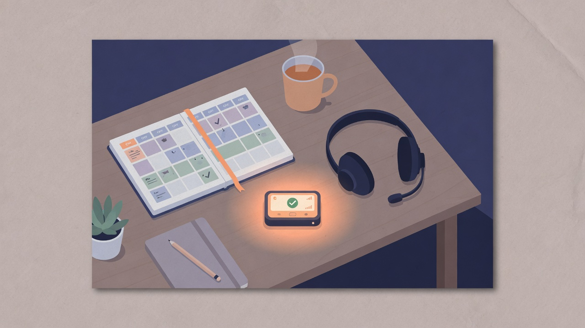

At Postman, my team owned a large-scale platform surface used by millions of developers. What we did not own — formally — was a predictable operational response. Production issues and public GitHub noise were handled ad hoc. Someone jumped in, or everyone hesitated. Retrospectives lacked a clear accountable role. The system worked until it did not, and then it worked by heroics. We needed on-call. We also needed engineers who still wanted to build product after the rotation.

What was broken before process
Without a rotation, four things piled up:
- Unclear ownership — incidents waited on “who feels responsible today.”
- Context-switch tax — feature work and firefighting shared the same brains without boundaries.
- Uneven load — the same people always raised their hands.
- Weak learning loops — retros had symptoms, not a role that carried fixes week to week.
For a developer-facing platform, user-visible breakage is not a side channel. It is the product. Treating ops as optional was a product decision, whether we admitted it or not.
Design goals
I wanted a system that was:
- Explicit — someone is primary, always.
- Fair — load rotates; it does not stick to volunteers.
- Bounded — on-call is a job for a window, not a personality type.
- Educational — the whole team sees production, not only a martyr subset.
- Humane — no permanent page-from-bed culture dressed up as commitment.
Reliability that depends on burnout is just deferred attrition.
The model we ran
Primary and secondary
- Primary — dedicated to monitoring, incident response, and triage (including GitHub-facing noise). Feature delivery expectations drop for that window on purpose.
- Secondary — backup for major incidents; not a stealth second primary for every ping.
If primary is still expected to hit the same sprint commitments, you do not have on-call. You have theater.
Two-week shifts with a handoff pattern
Engineers rotated on a two-week cadence. A common pattern was primary one window, then secondary the next — so knowledge transferred and no one lived forever in the blast radius. Back-to-back primary stretches were treated as a smell, not a badge.
Handoff as a team ritual
Weekly team time included an on-call handoff, not only standup status. Primary walked through:
- Incidents and resolutions
- Adjacent system issues that might hit us next
- Notable GitHub / support themes
- Follow-ups that needed owners beyond the shift
That ritual turned private pager pain into shared product knowledge.
Retros and playbooks
Major incidents got structured retros. Recurring issues earned playbooks — step-by-step paths so the next primary was not rediscovering folklore at 1 a.m. Playbooks are how on-call becomes a team asset instead of tribal knowledge in one engineer’s head.
Psychological safety and load management
- No expectation of endless consecutive primaries.
- Balance with feature work across the quarter so people are not typed as “ops only.”
- Managers (me included) treated page load and fairness as staffing concerns, not only engineer grit.
What improved
With clear ownership:
- Faster response — we saw on the order of a ~40% reduction in incident response time once roles were unambiguous (directionally; treat it as an order-of-magnitude win from process, not a lab result).
- More systematic triage — fewer “is anyone looking at this?” gaps.
- Better morale — predictable pain beats random pain.
- Broader operational skill — more engineers touched production reality.
- Earlier fixes — primaries had space to chip at known sharp edges before they became SEVs.
Stability improved because response became a designed system, not a personality contest.
What I would tell another EM before day one
- Write who is primary in a place the team actually looks.
- Cut feature load for primary or you will train people to ignore the pager.
- Ship handoff and playbooks in the first month, not after the third outage.
- Measure response and fairness, not only uptime.
- Defend the rotation against “just this once” exceptions from leadership — exceptions are how volunteers reappear.
Failure modes to avoid
- On-call as punishment for the least political engineers
- Secondary as free extra primary
- Retros without owners or due dates
- Alert noise so high that everyone mutes everything
- Celebrating heroes instead of fixing the systems that required them
Closing
Introducing on-call is not a tooling purchase. It is a product and staffing decision: user trust requires an accountable human path, and that path must be sustainable. At Postman, primary/secondary roles, two-week rotations, handoffs, retros, and playbooks turned operational ownership from ad hoc heroics into something the team could carry — and still ship. If your platform is already large and your response is still “whoever notices,” you do not have a reliability gap only. You have a leadership design gap. Close it on purpose.
Comments
Sign in with GitHub to join the discussion.